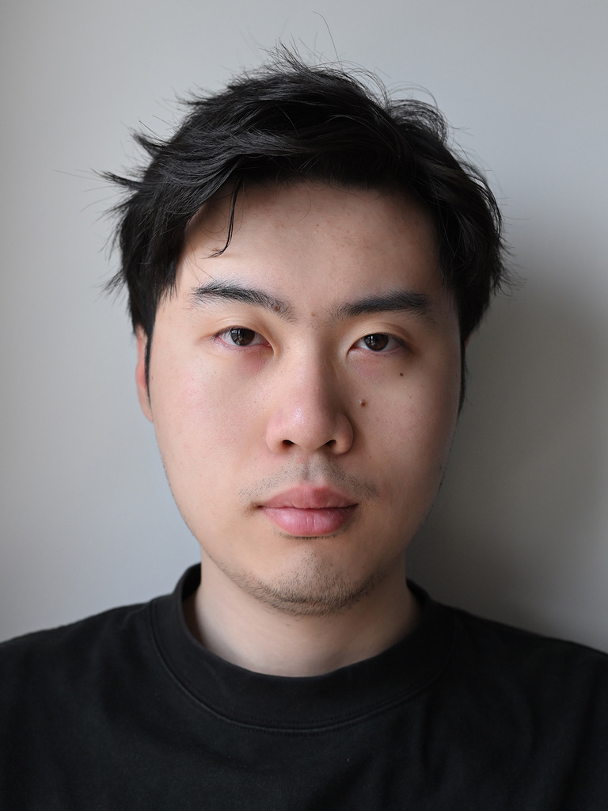

Contributed Talks
Planning-oriented Autonomous Driving, Tsinghua University, May 2023.
Pathways of Igniting World Models in Intelligent Autonomy, KUIS AI Center, Oct 2025.

I am a Ph.D. student in Information Engineering at CUHK MMLab, advised by Prof. Xiangyu Yue. Meanwhile, I am a research intern at OpenDriveLab, advised by Prof. Hongyang Li.
Research focus: Building autonomous, adaptive, and scalable self-improving embodied agents, through the lens of physical interactions and world models.
First/co-first author, Main contributor
 RISE: Self-Improving Robot Policy with Compositional World Model
RISE: Self-Improving Robot Policy with Compositional World Model
Scalable robotic reinforcement learning framework that shifts policy improvement from costly physical interactions to imaginary rollouts in a compositional world model.
A driving world model co-trained on heterogeneous real, web, action-labeled, and simulated non-expert driving data, paired with Video2Reward for policy evaluation.
 SimScale: Learning to Drive via Real-World Simulation at Scale
SimScale: Learning to Drive via Real-World Simulation at Scale
Real-world simulation framework that synthesizes diverse, high-fidelity, reactive driving states from existing logs and scales end-to-end planner training with simulated data.
 PlannerRFT: Reinforcing Diffusion Planners through Closed-Loop and Sample-Efficient Fine-Tuning
PlannerRFT: Reinforcing Diffusion Planners through Closed-Loop and Sample-Efficient Fine-Tuning
Closed-loop reinforcement fine-tuning framework for diffusion planners, using scenario-adaptive exploration and a fast simulator for sample-efficient policy improvement.
 Decoupled Diffusion Sparks Adaptive Scene Generation
Decoupled Diffusion Sparks Adaptive Scene Generation
Nexus introduces noise-decoupled scene generation for timely reaction and goal-directed control in adaptive driving scenarios, and serves as both a world model and a data engine.
 Vista: A Generalizable Driving World Model with High Fidelity and Versatile Controllability
Vista: A Generalizable Driving World Model with High Fidelity and Versatile Controllability
A generalizable driving world model for high-fidelity video prediction, long-horizon future rollout, multi-modal control, and action-aware reward estimation.
 Generalized Predictive Model for Autonomous Driving
Generalized Predictive Model for Autonomous Driving
A billion-scale predictive model for autonomous driving, pre-trained on massive youtube driving clips and evaluated for zero-shot generalization across unseen datasets and tasks.
 Planning-oriented Autonomous Driving
Planning-oriented Autonomous Driving
Planning-oriented autonomous driving framework that unifies perception, prediction, and planning with end-to-end training for safer closed-loop autonomy.
Planning-oriented Autonomous Driving, Tsinghua University, May 2023.
Pathways of Igniting World Models in Intelligent Autonomy, KUIS AI Center, Oct 2025.
RSS, CVPR, NeurIPS, ICLR, ICCV, ECCV, AAAI, T-PAMI, and related venues.